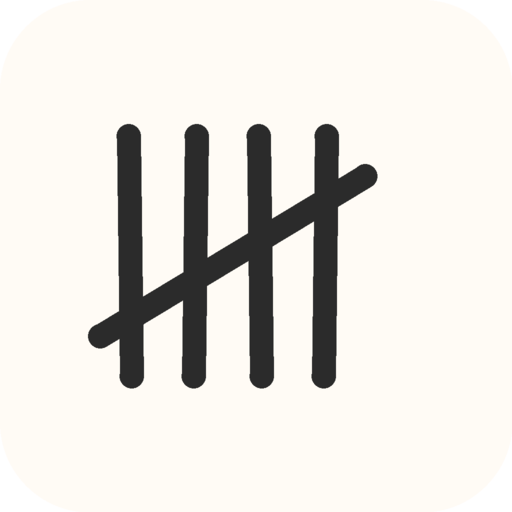
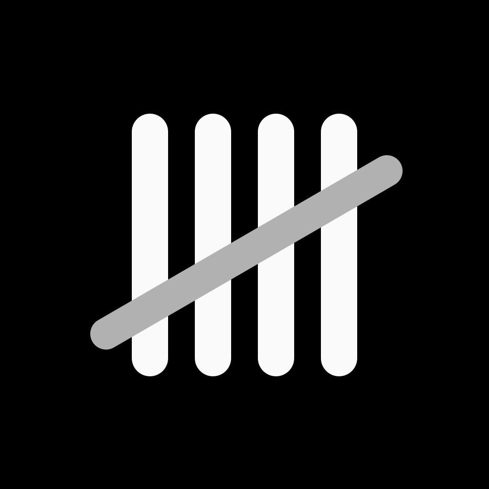
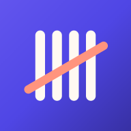

Tally's refreshed icon keeps four ivory tally strokes and a coral completion stroke. These previews use the exported assets, with system-like masks for visual inspection.




Export checks cover dimensions, opacity, grayscale, exact web/iOS copies and the Android / PWA safe circles. Native builds remain the final check for platform resource compilation.